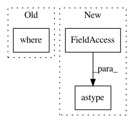

ad66bf0a8faf1f230891faea92c31d8a3a0baa3f,niftynet/engine/sampler_selective.py,,candidate_indices,#Any#Any#Any#,112
Before Change
// print("Begin fft convolve")
counts_window = fftconvolve(seg_label, window_mean, "same")
// print("finished fft convolve")
valid_places = np.where(counts_window > np.max([num_min, 1]),
np.ones_like(data), np.zeros_like(data))
counts_size = fftconvolve(
label_size * valid_places, window_mean, "same")
mean_counts_size_temp = np.nan_to_num(
counts_size * 1.0 / counts_window)
After Change
counts_window = fftconvolve(seg_label, window_ones, "same")
// print("finished fft convolve")
valid_places = \
(counts_window > np.max([num_min, 1])).astype(data.dtype)
counts_size = fftconvolve(
label_size * valid_places, window_ones, "same")
mean_counts_size_temp = np.nan_to_num(
counts_size * 1.0 / counts_window)
In pattern: SUPERPATTERN
Frequency: 3
Non-data size: 3
Instances
Project Name: NifTK/NiftyNet
Commit Name: ad66bf0a8faf1f230891faea92c31d8a3a0baa3f
Time: 2017-10-04
Author: wenqi.li@ucl.ac.uk
File Name: niftynet/engine/sampler_selective.py
Class Name:
Method Name: candidate_indices
Project Name: dmlc/gluon-nlp
Commit Name: 8e84bd1c5a4cd0e61ee67abc532ab692e5335914
Time: 2020-12-10
Author: xshiab@connect.ust.hk
File Name: src/gluonnlp/attention_cell.py
Class Name:
Method Name: masked_softmax
Project Name: NifTK/NiftyNet
Commit Name: ad66bf0a8faf1f230891faea92c31d8a3a0baa3f
Time: 2017-10-04
Author: wenqi.li@ucl.ac.uk
File Name: niftynet/engine/sampler_selective.py
Class Name:
Method Name: create_probability_weights